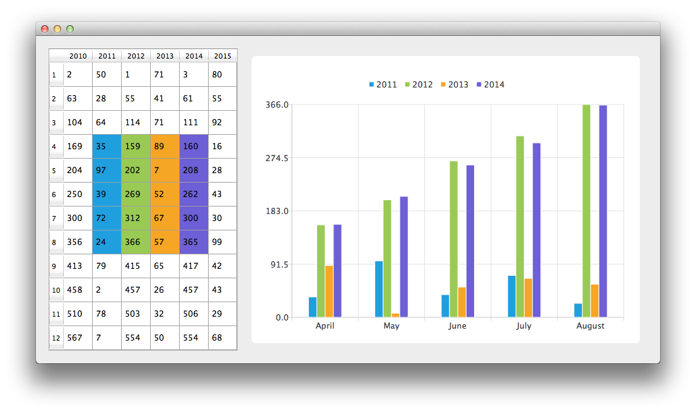

Using Data Models with Bar Charts
Note: This is part of the Charts with Widgets Gallery example.

Let's start by creating an instance of CustomTableModel class. The CustomTableModel class is derived from QAbstractTableModel, and it was created for the purpose of this example. The constructor of this class populates the model's internal data store with the data required for our chart example.
auto model = new BarModelMapperModel(this);
We now have a model with data that we would like to display both on the chart and in a QTableView. First, we create QTableView and tell it to use the model as a data source. To have the data presented nicely, the minimum width of the table view is set and its headers resize mode changed to stretch.
// create table view and add model to it auto tableView = new QTableView(this); tableView->setModel(model); tableView->setMinimumWidth(300); tableView->horizontalHeader()->setSectionResizeMode(QHeaderView::Stretch); tableView->verticalHeader()->setSectionResizeMode(QHeaderView::Stretch); model->setParent(tableView);
Now we need a QChart instance to display the same data on the chart. We also enable animations. It makes it easier to see how a modification to the model's data affects the chart.
auto chart = new QChart; chart->setAnimationOptions(QChart::AllAnimations);
The first line of the code below creates new bar series. Variables firstRow and rowCount are used to define a custom model mapping. Custom mapping allows to take only part of the data from the model. In this case data from 5 rows starting with the row with the index 3. The following three lines create an instance of the QVBarModelMapper class and specify that the data for the bar sets should be taken from the model's columns with indexes from 1 to 4 (inclusive). To create a connection between the series and the model we set both of those objects to QVBarModelMapper.
Finally the series is added to the chart.
auto series = new QBarSeries; int first = 3; int count = 5; auto mapper = new QVBarModelMapper(this); mapper->setFirstBarSetColumn(1); mapper->setLastBarSetColumn(4); mapper->setFirstRow(first); mapper->setRowCount(count); mapper->setSeries(series); mapper->setModel(model); chart->addSeries(series);
To show in QTableView which data corresponds with which bar set, this example uses table coloring. When series is added to the chart, it is assigned a color based on the currently selected theme. Code below extracts that color from the series and uses it to create colored QTableView. Coloring of the view is not a part of the QChart functionality.
// for storing color hex from the series QString seriesColorHex = "#000000"; // get the color of the series and use it for showing the mapped area QList<QBarSet *> barsets = series->barSets(); for (int i = 0; i < barsets.count(); i++) { seriesColorHex = "#" + QString::number(barsets.at(i)->brush().color().rgb(), 16).right(6).toUpper(); model->addMapping(seriesColorHex, QRect(1 + i, first, 1, barsets.at(i)->count())); }
We would like to have categories placed on the chart's axis that describe what the data means. Next snippet shows how to do that.
QStringList categories {"April", "May", "June", "July", "August"}; auto axisX = new QBarCategoryAxis; axisX->append(categories); chart->addAxis(axisX, Qt::AlignBottom); series->attachAxis(axisX); auto axisY = new QValueAxis; chart->addAxis(axisY, Qt::AlignLeft); series->attachAxis(axisY);
To avoid setting up the QGraphicsScene we use the QChartView class that does it for us. The QChart object pointer is used as a parameter of the QChartView constructor. To make the render look nicer Antialiasing is turned on and the minimum size of the chartView widget is set.
auto chartView = new QChartView(chart, this); chartView->setRenderHint(QPainter::Antialiasing);
Finally, we place both widgets in a layout and use the layout as the application layout.
// create main layout auto mainLayout = new QGridLayout; mainLayout->setHorizontalSpacing(10); mainLayout->addWidget(tableView, 1, 0); mainLayout->addWidget(chartView, 1, 1); mainLayout->setColumnStretch(1, 1); mainLayout->setColumnStretch(0, 0); setLayout(mainLayout);
The application is ready. Try modifying the data in the table view and see how it affects the chart.